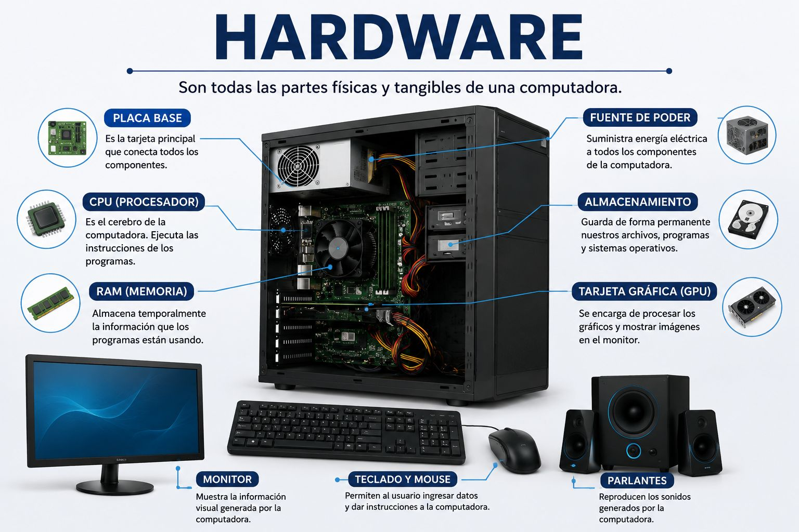

Explicación del concepto:
El hardware es toda la parte física de una computadora, es decir, todo lo que podemos ver y tocar. Incluye los componentes internos, como la placa madre, el procesador, la memoria RAM y el disco duro; también incluye los dispositivos externos como el teclado, mouse, monitor, impresora, bocinas y memorias USB.
En pocas palabras, el hardware es el cuerpo de la computadora. Sin él, los programas no podrían funcionar porque no existirían las piezas necesarias para procesar, guardar y mostrar la información.
Ejemplo práctico:
Un ejemplo es cuando usamos una computadora para hacer una tarea. El teclado sirve para escribir, el mouse para seleccionar opciones, el monitor muestra la información, la memoria RAM ayuda a que los programas trabajen rápido y el disco duro guarda los archivos.
Recurso multimedia:

Reflexión personal:
Elegí este tema porque me parece importante conocer las partes físicas de una computadora. Muchas veces usamos una computadora todos los días, pero no sabemos qué componentes permiten que funcione. Comprender el hardware me ayuda a valorar mejor la tecnología y también a identificar posibles fallas básicas en un equipo.